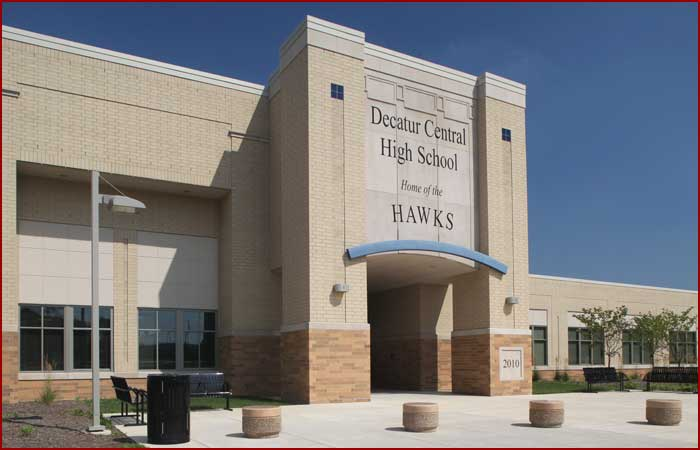
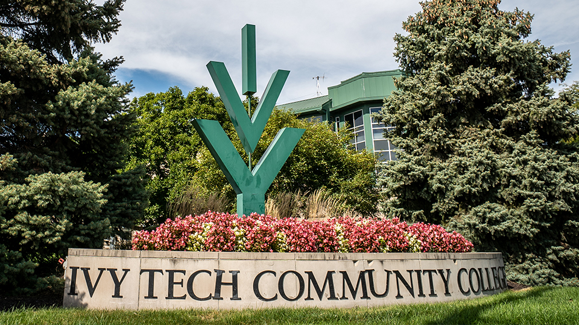

Education

Class of 2024

Hi there; I am pleased to share the highlights of my educational journey, which has been both transformative and rewarding.
I graduated from Decatur Central High School with an Academic and Technical Honors Diploma,
achieving a rank in the top 20% of my class of 374 students.
My academic path began at the Salt Lake Center for Science Education (SLCSE) High School in Utah,
where I was fortunate to immerse myself in math and science through hands-on learning experiences and field trips.
At SLCSE, I actively participated in the MESA club, which focused on fostering teamwork, critical thinking, and problem-solving skills.
A particularly memorable highlight was our visit to the Hansen Dome Theater,
where I gained a deeper understanding of the universe through a unique blend of arts, storytelling, and film.
In 2021, I transitioned to Indiana, continuing my education at Decatur Central.
I successfully completed my sophomore year and quickly moved into my junior year, which presented numerous opportunities.
I received an invitation to apply for membership in the National Honor Society (NHS)
and had the chance to tour the Area 31 Career Center, where I subsequently enrolled in the Emergency Medical Technician (EMT) program.
Completing my junior year seamlessly led into my senior year, which was characterized by both challenges and significant growth.
Throughout my final year, I served as an active member of the National Honor Society
while participating in a job-ready program at Area 31 Career Center,
where I earned certifications in CPR and Emergency Dispatch.
Being part of the EMT program and NHS allowed me to further develop my leadership, problem-solving, and community service skills,
reinforcing my passion for teamwork and collaboration.
This journey has not only shaped my academic pursuits
but has also instilled in me a strong commitment to making a positive impact in my community.
College Journey

Hi, my name is Zawadi.
I am an IT student at Ivy Tech Community College, pursuing an Associate of Applied Science in Software Development.
My journey reflects a deep commitment to aligning my passion for design and development with a successful career in technology.
I have not yet had the opportunity to be part of a significant project that fully utilizes my skills;
however, I am eager to contribute to initiatives that allow me to showcase my design and creative abilities.
Although my experience in larger endeavors is limited, I have actively put my design and creative skills to the test independently,
which has significantly contributed to my professional growth.
This process has motivated me to apply the skills I have acquired in my coursework to real-world situations.
I am enthusiastic about collaborating on projects that will further develop my capabilities and impact.